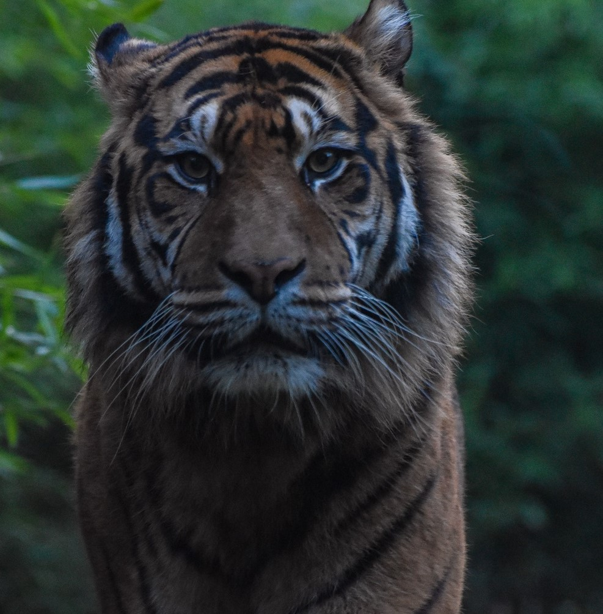

| 生活习性 |
| 虎常单独活动，只有在繁殖季节雌雄才在一起生活。每只虎都有自己的领地。当雄虎和雌虎巡视领地时，会举起尾巴将有强烈气味的分泌物和尿液喷在树干上或灌木丛中，界定自己的势力范围。有时也会用锐利的爪在树干上抓出痕迹，或在地上打滚，留下虎毛，以界定自己的势力范围。尽管虎是独居动物，并有着自己的领地，公虎仍可能常和自己的配偶及孩子们待在一起。成年虎，尤其是同胞兄弟姐妹之间很可能在一段时间内（未知是否长期性）相互协作，共享收获。一个公虎的领地内可能有不止一只雌虎，不过雌虎之间的领地未必交叠。公虎对自己的领地严格捍卫，领地面积过大，就难免有人想占便宜。面对入侵者，公虎通常是奉行灭杀政策，而且这样也能减少自己未来的竞争对手。雌虎一般没这么无聊，即便它们的邻居死了，它也未必会去开拓疆域。 |
|
| 虎无固定巢穴，多在山林间游荡寻食。能游泳。由于林区开发、人口激增，过去偏远地区都已发展为村镇，虎亦常到林区居民点附近觅食。虎多黄昏活动，白天多潜伏休息，没有惊动则很少出来。虎的活动范围较大，在北方日寻食活动范围可达数十千米；在南方西双版纳因食物较多则活动距离较短。基本上是夜行动物，不过在有些远离人类的保护区里，这些家伙们白天也出来溜达。在寒冷的北部居住的虎有时在白天也得出动四处捕食。 虎不喜欢炎热的天气，因为它们缺少汗腺，夏季到来之后它们总会四处找树阴躲着。由于游泳技术高超，它们更是十分热爱游水，炎热地区的虎特别喜欢在水塘泡澡嬉戏。不过它们的爬树本领就远比不上游泳技能了，估计这是体型太大太重所致。 |
|
| 虎最精良的攻击武器就是粗壮的牙齿和可伸缩的利爪。捕食时异常凶猛、迅速而果断，以消耗最小的能量来获取尽可能大的收获为原则。但捕食猛兽时，若没有足够的把握绝对不干。老虎在亚洲没有天敌，由于脚上生有很厚的肉垫，老虎在行动时声响很小，机警隐蔽。它在雪地上行走时，后脚能准确地踩在前脚的足迹上。 老虎遇到猎物时会伏低，并且寻找掩护，慢慢潜近，等到猎物走近攻击距离内，就突然地跃出，攻击背部，这是为了避免遭到猎物反抗所伤到。老虎会先用爪子抓穿猎物的背部并且把它拖倒在地，再用锐利的犬齿紧咬住它的咽喉使它窒息，直到猎物死亡才松口。这种攻击方式也是猫科动物最典型的攻击方法。老虎特殊的攻击手段是咬断对手的脊椎，在大型猫科是较常见。 |
|  |
| 通常捕食大型哺乳动物，包括各种野鹿、野羊、野牛、野猪、马鹿、水鹿、狍、麝、麂等有蹄类动物，偶尔亦捕食野禽，秋季亦采食浆果和大型昆虫等。每次食肉量为17-22千克，体型大的每顿可达30千克，然后6天里不用吃肉。有时也捕捉各种小动物，像鸟类、猴子、鱼等等。为了帮助消化，它们也会偶尔啃点草。有时饥饿之极虎也会捕食人类家畜，甚至杀人（吃人的虎经常是那些老弱病残，无法对付健康动物的可怜家伙，而这种惨剧通常只有在人类进入虎的领地后才会发生），因此遭到某些人类的憎恨。如果食物吃不完，它们也会把剩下的藏起来，通常是距离水源不远的地方，等过几天再来吃。 |
|